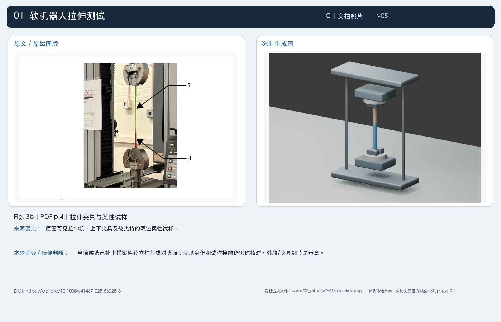
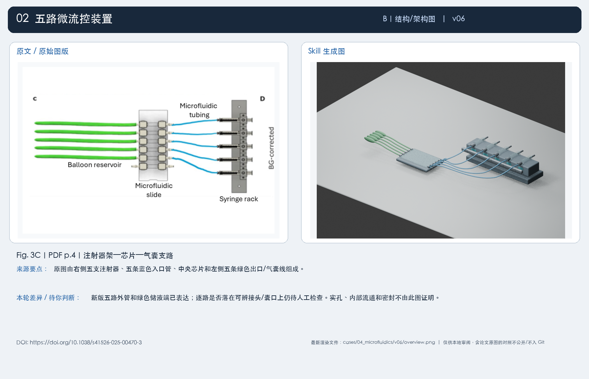
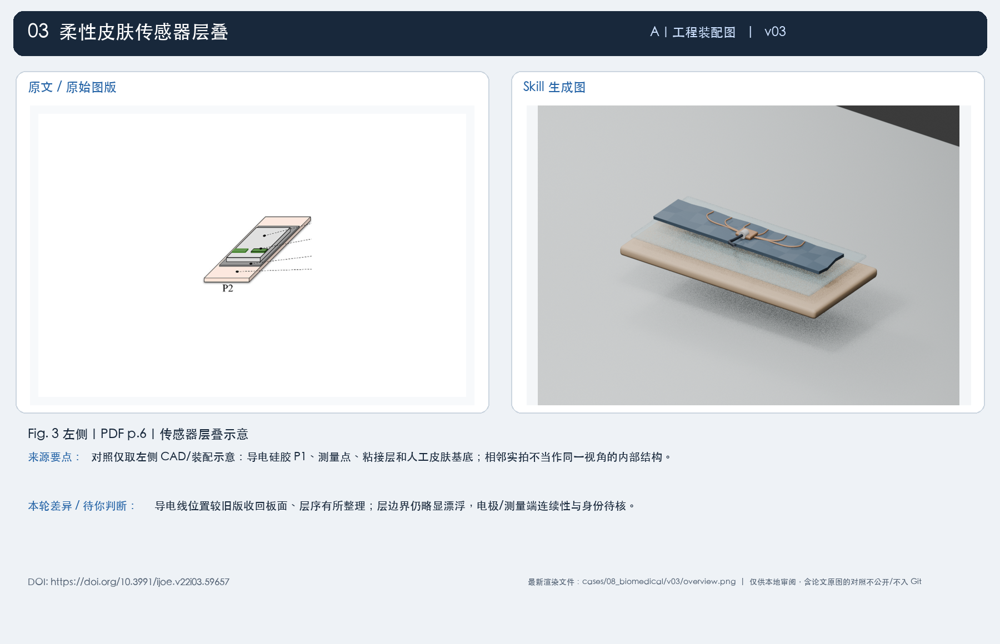
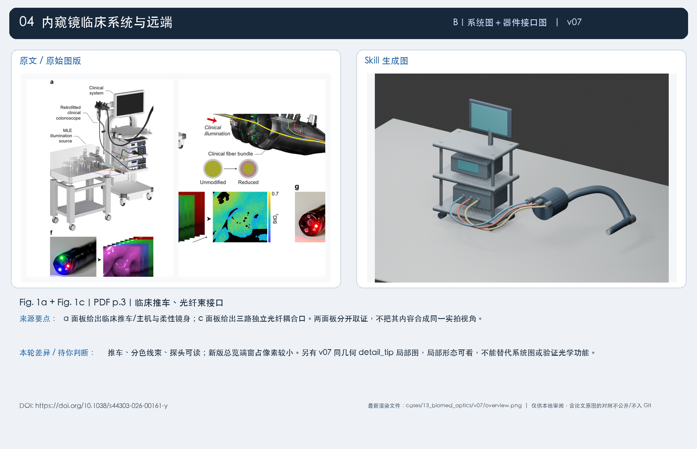
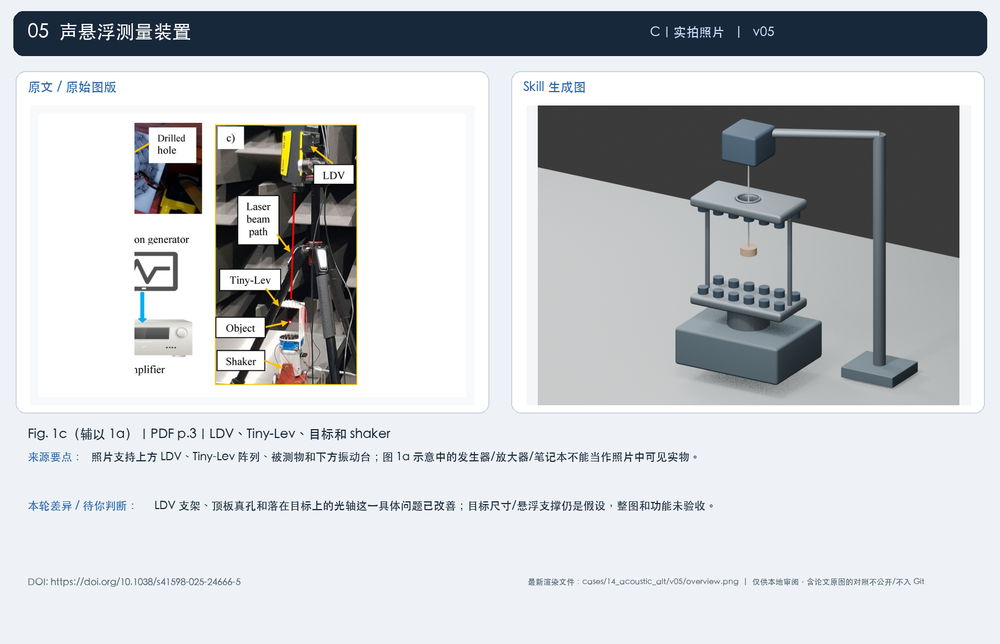
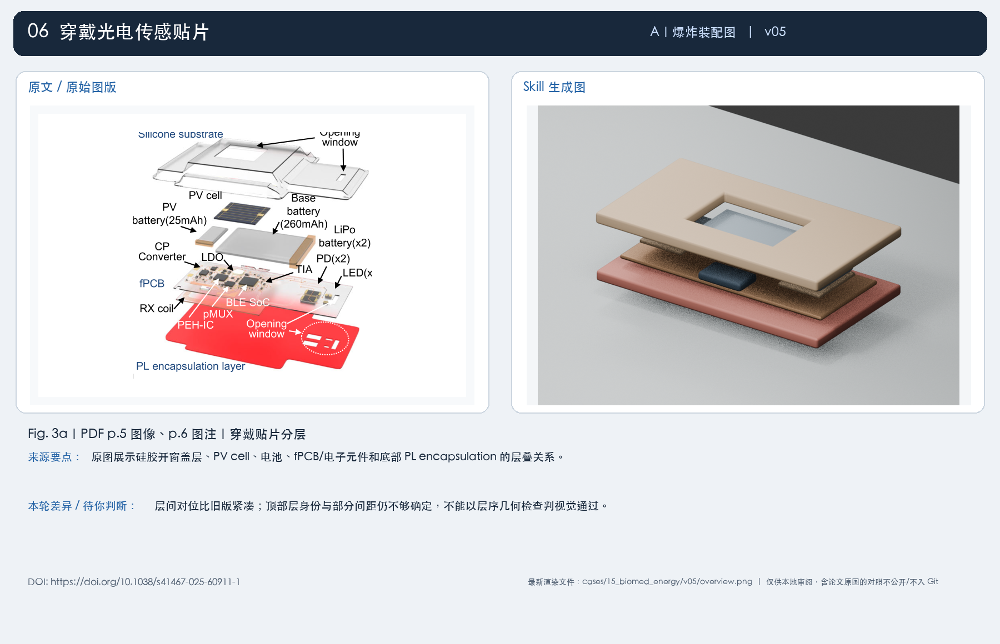
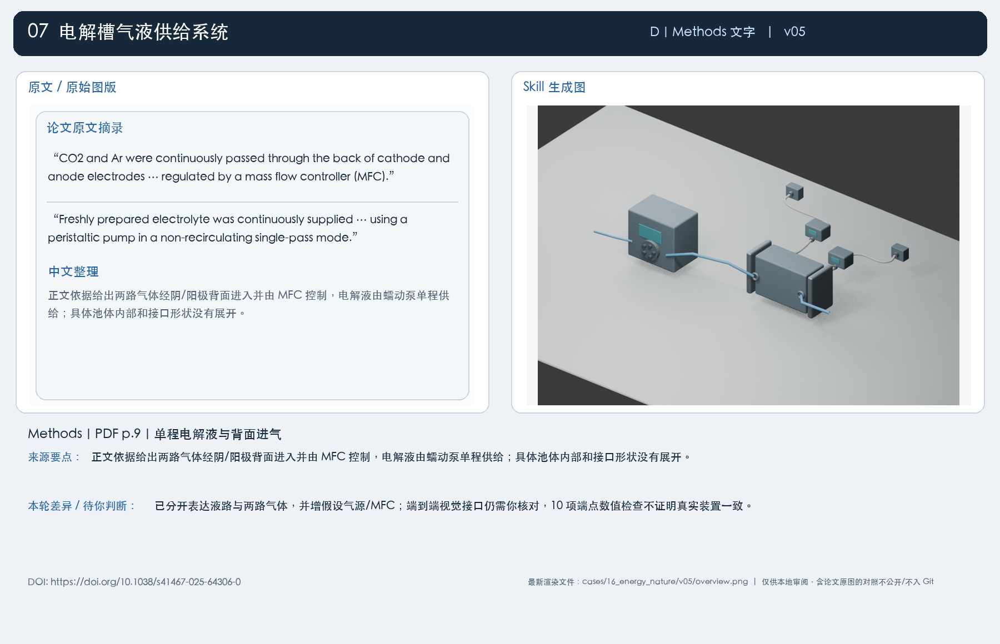
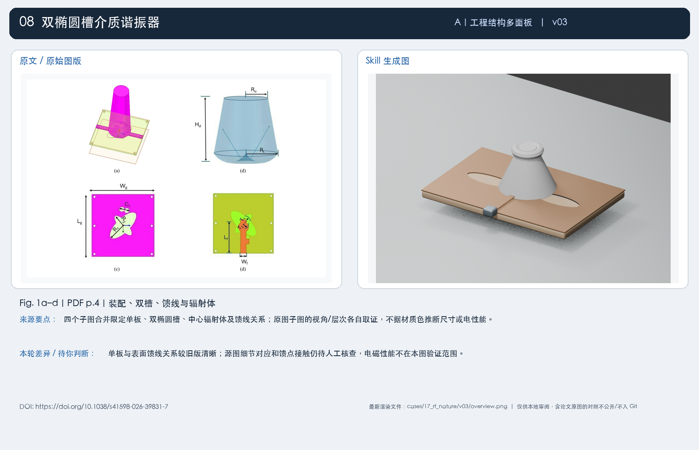
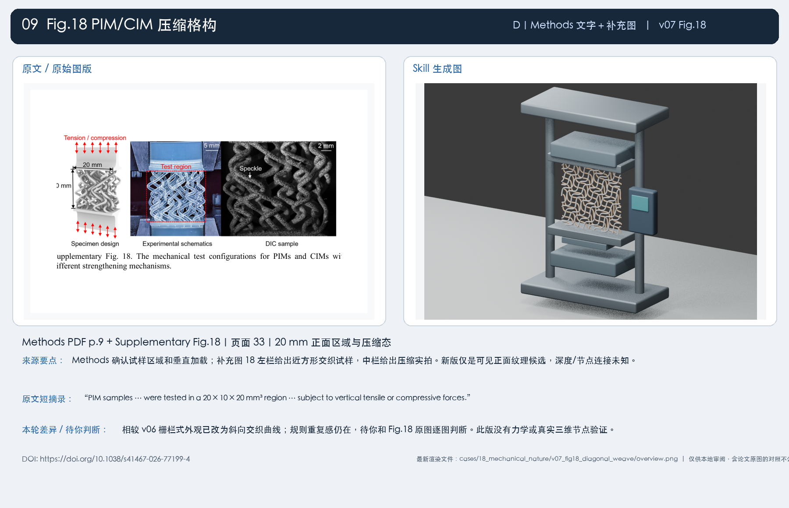
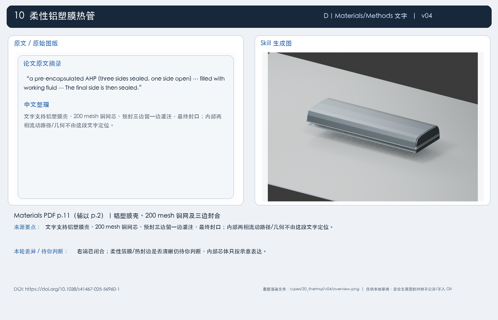

每张对照图左侧为指定原始图版/原文摘录，右侧为当前版本渲染。A/B/C/D 输入类型均包含。原文图片仅保存在本地审阅目录；未经再分发许可，不公开发布。现有状态为候选审阅，不代表视觉或功能验收。
Fig. 3b｜PDF p.4｜拉伸夹具与柔性试样 · DOI 10.1038/s41467-025-56025-3

当前候选已补上横梁连续立柱与成对夹面；夹爪身份和试样接触仍需你核对。外轨/夹具细节是示意。
生成图路径：cases/02_robotics/v05/overview.png
Fig. 3C｜PDF p.4｜注射器架—芯片—气囊支路 · DOI 10.1038/s41526-025-00470-3

新版五路外管和绿色储液端已表达；逐路是否落在可辨接头/囊口上仍待人工检查。实孔、内部流道和密封不由此图证明。
生成图路径：cases/04_microfluidics/v06/overview.png
Fig. 3 左侧｜PDF p.6｜传感器层叠示意 · DOI 10.3991/ijoe.v22i03.59657

导电线位置较旧版收回板面、层序有所整理；层边界仍略显漂浮，电极/测量端连续性与身份待核。
生成图路径：cases/08_biomedical/v03/overview.png
Fig. 1a + Fig. 1c｜PDF p.3｜临床推车、光纤束接口 · DOI 10.1038/s44303-026-00161-y

推车、分色线束、探头可读；新版总览端窗占像素较小。另有 v07 同几何 detail_tip 局部图，局部形态可看，不能替代系统图或验证光学功能。
生成图路径：cases/13_biomed_optics/v07/overview.png
Fig. 1c（辅以 1a）｜PDF p.3｜LDV、Tiny-Lev、目标和 shaker · DOI 10.1038/s41598-025-24666-5

LDV 支架、顶板真孔和落在目标上的光轴这一具体问题已改善；目标尺寸/悬浮支撑仍是假设，整图和功能未验收。
生成图路径：cases/14_acoustic_alt/v05/overview.png
Fig. 3a｜PDF p.5 图像、p.6 图注｜穿戴贴片分层 · DOI 10.1038/s41467-025-60911-1

层间对位比旧版紧凑；顶部层身份与部分间距仍不够确定，不能以层序几何检查判视觉通过。
生成图路径：cases/15_biomed_energy/v05/overview.png
Methods｜PDF p.9｜单程电解液与背面进气 · DOI 10.1038/s41467-025-64306-0

已分开表达液路与两路气体，并增假设气源/MFC；端到端视觉接口仍需你核对，10 项端点数值检查不证明真实装置一致。
生成图路径：cases/16_energy_nature/v05/overview.png
Fig. 1a–d｜PDF p.4｜装配、双槽、馈线与辐射体 · DOI 10.1038/s41598-026-39831-7

单板与表面馈线关系较旧版清晰；源图细节对应和馈点接触仍待人工核查，电磁性能不在本图验证范围。
生成图路径：cases/17_rf_nature/v03/overview.png
Methods PDF p.9 + Supplementary Fig.18｜页面 33｜20 mm 正面区域与压缩态 · DOI 10.1038/s41467-026-77199-4

相较 v06 栅栏式外观已改为斜向交织曲线；规则重复感仍在，待你和 Fig.18 原图逐图判断。此版没有力学或真实三维节点验证。
生成图路径：cases/18_mechanical_nature/v07_fig18_diagonal_weave/overview.png
Materials PDF p.11（辅以 p.2）｜铝塑膜壳、200 mesh 铜网及三边封合 · DOI 10.1038/s41467-025-56960-1

右端已闭合；柔性箔膜/热封边是否清晰仍待你判断，内部芯体只按示意表达。
生成图路径：cases/20_thermal/v04/overview.png